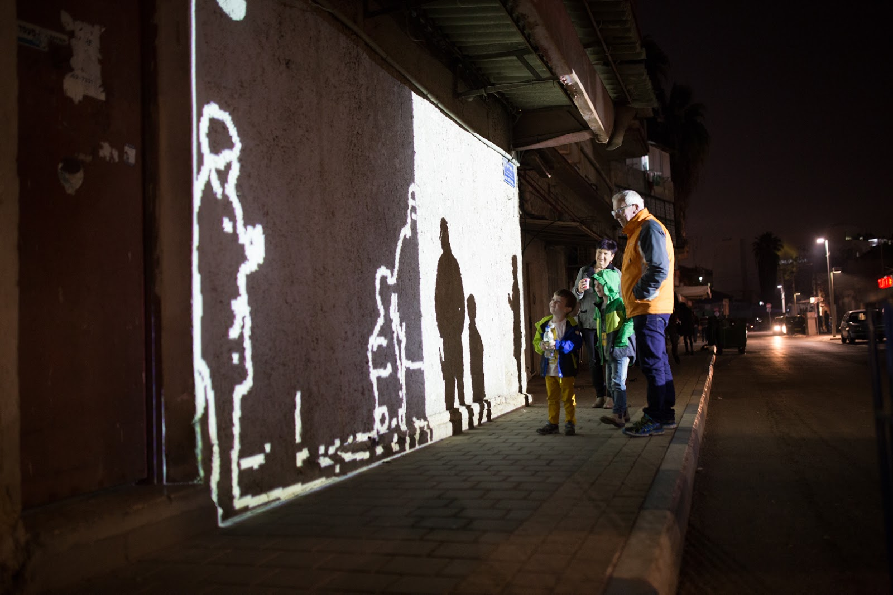
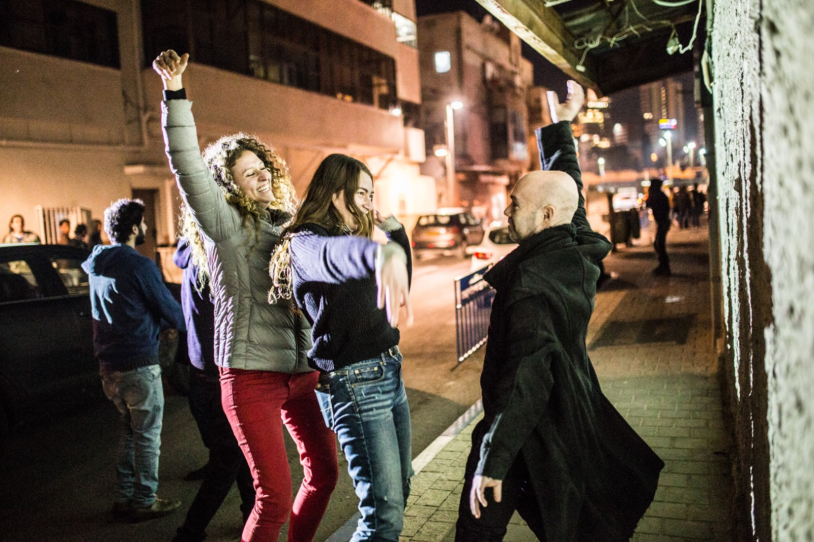
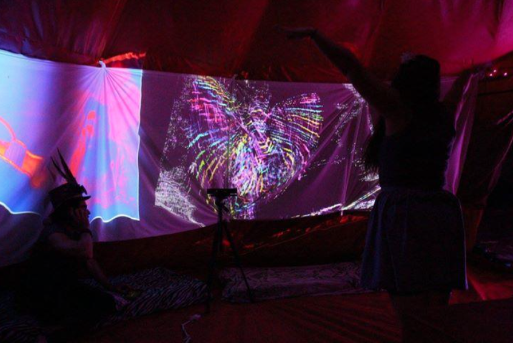
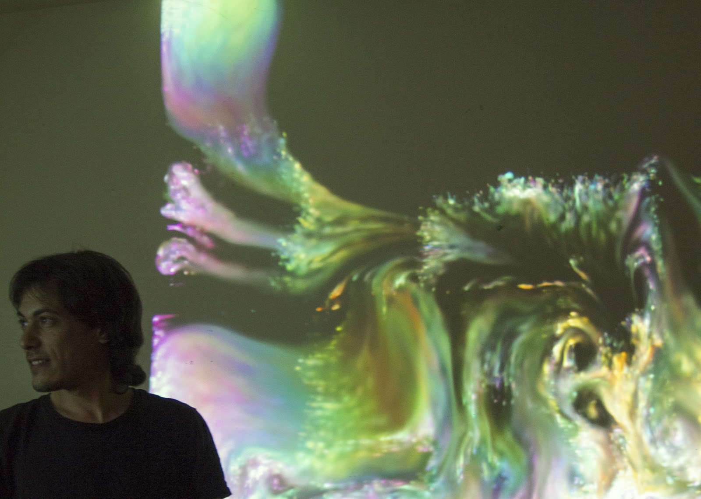
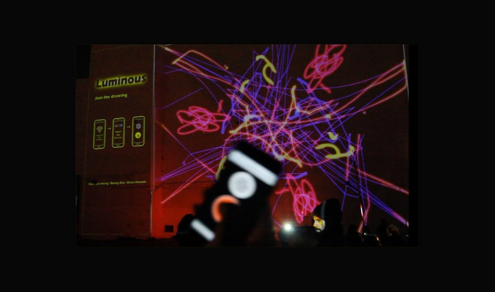
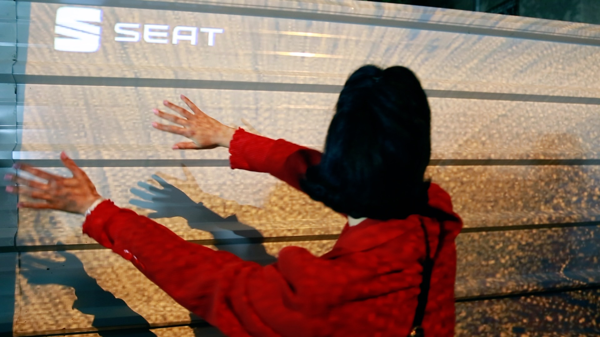
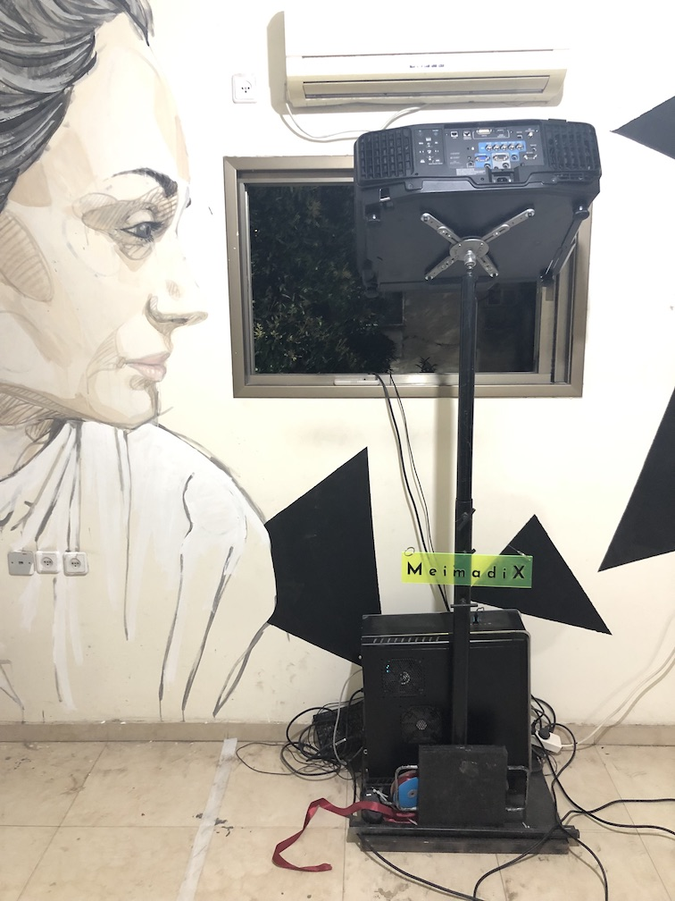
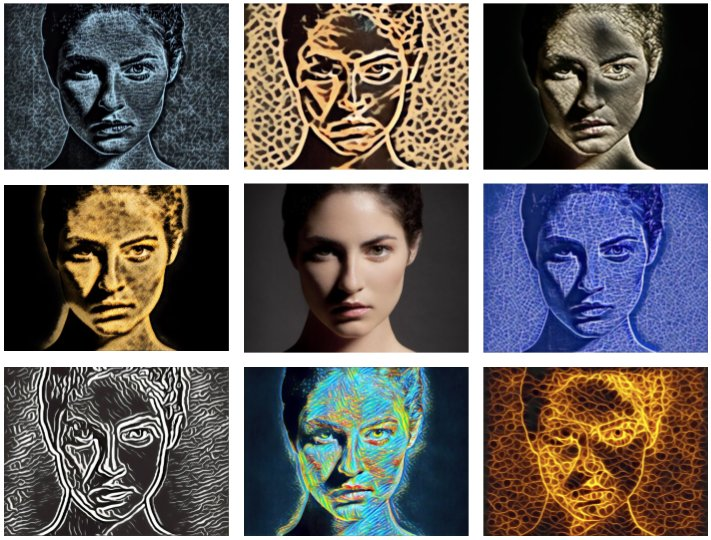
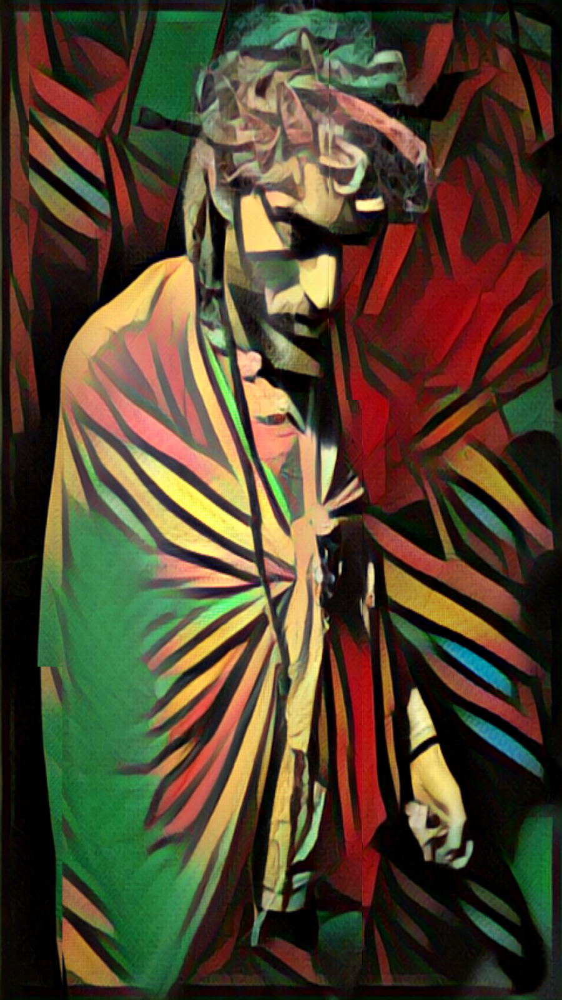

Real-time reflection of shadows on a wall. Interactive Installation using a projector, camera and custom software.

The work creates a playful interaction between people and shadows, both cast and created.

First displayed at NightLight 2016, later at several other venues, culminating in The Israel Museum in Jerusalem.
Project team: Ronny Ziss & Orian Sharoni
Your motion creates colorful flows and vortices projected the walls. Interactive installation using projectors, IR cameras, depth sensors, custom software (computer vision, fluid dynamics).

Motion feeds into a fluid simulation, leading naturally into sweeping, flowing movements to swirl colors and play with eddies

Project team: Gal Bracha & Roee Shenberg
Vision Dojo
Multi-user collaborative digital graffiti. Created using a projector, custom software and passersby’s phone’s motion sensors.

Simply connect to our WiFi network and your phone becomes a controller to draw on the wall, no app or download necessary.
Swirl particles of light through your motion. Projector, camera and custom software.

This installation was part of the Tel Aviv Popup Museum. a condemned building was taken over by more than 90 street artists for a week before the building's demolition.

Set-up inside the building
Project team: Orian Sharoni & Roee Shenberg
A mirror that reflects you through the lens of various artistic styles. Play with your perception of self using AI.

Uses Neural Style Transfer, an Artificial Neural Network, in order to apply the style from one image onto a video feed in real-time. Your reflection isn't quite your own self.

Project team: Shlomi Mir, Ben Feher, Gal Bracha & Roee Shenberg
Self Reflection
We Are Meimadix
A Tel Aviv-based interactive design studio. We create powerful new formats of visual communication. Together with selected brands and cultural institutions, we work as artists, designers and consultants across strategy and branding, moving image, and immersive experiences.